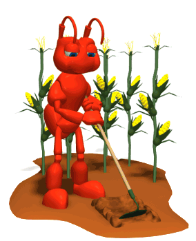

Semut dan Belalang
Pada siang hari di akhir musim gugur, satu keluarga semut yang telah bekerja keras sepanjang musim panas untuk mengumpulkan makanan, mengeringkan butiran-butiran gandum yang telah mereka kumpulkan selama musim panas. Saat itu seekor belalang yang kelaparan, dengan sebuah biola di tangannya datang dan memohon dengan sangat agar keluarga semut itu memberikan sedikit makan untuk dirinya.

"Apa!" teriak sang Semut dengan terkejut, "tidakkah kamu telah mengumpulkan dan menyiapkan makanan untuk musim dingin yang akan datang ini? Selama ini apa saja yang kamu lakukan sepanjang musim panas?"
"Saya tidak mempunyai waktu untuk mengumpulkan makanan," keluh sang Belalang; "Saya sangat sibuk membuat lagu, dan sebelum saya sadari, musim panas pun telah berlalu."

Semut tersebut kemudian mengangkat bahunya karena merasa gusar.
"Membuat lagu katamu ya?" kata sang Semut, "Baiklah, sekarang setelah lagu tersebut telah kamu selesaikan pada musim panas, sekarang saatnya kamu menari!" Kemudian semut-semut tersebut membalikkan badan dan melanjutkan pekerjaan mereka tanpa memperdulikan sang Belalang lagi.
Pesan Moral "Ada saatnya untuk bekerja dan ada saatnya untuk bermain. Bagilah waktu seadil mungkin agar bermanfaat terutama untuk diri kita sendiri".